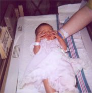

|
3/07/01: Baby's Here!  Hope Vianna Kingsley was born Saturday March 3rd at 7:44am. She came in at 6 pounds and 15 ounces, with a full head of brown hair. Hope Vianna Kingsley was born Saturday March 3rd at 7:44am. She came in at 6 pounds and 15 ounces, with a full head of brown hair.

2/27/01: Week 39. Last Friday and then again yesterday the doctor gave Lisa the option of inducing labor. After considering all the options she decided to wait until nature kicks in and labor is naturaly achieved, or her medical condition worsens. As a result she was given more medications and is to see the doctor twice weekly and NST's twice weekly.
Lisa continues to be grumpy and angry. I can only imagine the pain and bodily changes she is currently going through. Which is a good thing.
As we come everso closer to her due date we have both begun to worry. Lisa worries about hospital security. An issue that has become more of a concern since our hospital visit when we discovered just how little security our hospital has, it is shocking really.
My main concerns center around being a good partner both during labor as well as during the first week after. I'm not embarrassed to say that I am a little fearful of the actural process of labor. These last few months have been so hard on Lisa both physicly and emotionly. It disturbs me to see her in so much pain, and the idea of labor brings nothing but pain. After labor is over there is another issue. We both have large families, many of whom do not get a long. It is my job to see to it that Lisa gets plenty of rest and recovery time after birth, while still trying to maintain some resemblence of peace and order when it comes to the family.
2/21/01: Week 38. This week blood tests have indicated that Lisa has developed anemia and also toxemia. She is right on the border of needing medical intervention. The doctor was considering inducing labor yesterday. However he decided that he would wait until Friday and see if she goes into labor on her own. Inducing increases the chance of both c-section and complications. If she remains toxic and anemic, which is most likely to be the case, then he will go ahead and induce.
2/13/01: Week 37. That means 2 to 3 more weeks. The doctor officialy took Lisa off work today and put her on bed rest. Lisa is also to undergo weekly non-stress tests. The baby has turned into position and has dropped. At this point the baby could be here any day now. 
1/31/01: Week 35. That means about 5 more weeks. The ultrasound last week turned out ok, just like the doctor had said. The baby looks fine and is right on target as faw as her size goes. The baby is also head down at this point awaiting birth, so is Lisa. Lisa lost yet another 3 pounds just during this last week. Because of Lisa's problems the doctor cut the hours that she can work and also limited her at work activities. If this doesn't help the doctor will most likely take her off work at next weeks appointment.
Lisa want's to work as long as possible, however what she really wants at this point is delivery. I have to keep reminding her that pregnancy doesn't last forever. Which is a very good thing, since I believe that would lead to the eventual extintion of men.
1/16/01: Week 33. That means 7 more weeks. We went in for another pre-natal exam today. Because Lisa has been having pre-term contractions, he has decided it would be best to see Lisa on a weekly basis. He has already been seeing her every 4 weeks, instead of the standard 6. Her due date is March 5th but depending on her condition they might decide to take the baby up to 4 weeks early.
We go in on Monday for another ultrasound. The doctor indicated that the baby hasn't grown enough since last months visit. He also indicated that the baby's heartbeat was a little faster than normal. Needless to say Lisa has been stressed over this news.  The doctor assures us that it isn't a problem at this point. All the blood work and other exams that she has had the past two weeks all look normal. He just want's the ultrasound to be sure. The doctor assures us that it isn't a problem at this point. All the blood work and other exams that she has had the past two weeks all look normal. He just want's the ultrasound to be sure.
Note: I will most likely be updating this page every week now.
12/20/00: Week 29. Lisa has gained another 3 pounds since her last pre-natal exam, for a net loss of about 22 pounds. During this last visit Lisa took the glucose test, which she said wasn't as bad as everyone has made it out to be. It has been a couple days since the appointment and we haven't been contacted by the doctors office. Which should mean that the test came out ok and Lisa hasn't developed gestational diabetes. A very good thing. 
12/04/00: Week 27. Lisa's recent pre-natal exam went very well. The baby appears to be growing as expected. Lisa gained about 5 pounds between this last exam and the one before. However, she has still lost a total of 25 pounds durring the prenency. Her next exam is scheduled for the middle of December, when she will undergo the dreaded glucose test.
10/26/00: Lisa had her follow up exam today. The doctors believe that for the most part the baby is out of danger.  Lisa was giving some more pain medications and directed to follow up on her next prenatal visit on November 20. Lisa was giving some more pain medications and directed to follow up on her next prenatal visit on November 20.
10/24/00: We had a pretty horrible day yesterday after we were in a hit and run accident. Lisa was driving and hit her abdomen on the stearing wheel. This impact along with the stress of the hit and run, caused Lisa to have contractions. We spent the rest of the afternoon and night in the hospital Labor & Delivery and ER rooms. After several hours or tests, fetal monitoring, and ultrasounds, they sent us home to "wait and see". At this point the baby is not "viable", so there is nothing more the doctors can do at this point.
10/16/00: It's been over a month since the last update, but not all that much has been happening around here, other than shopping. We went in for another ultrasound this afternoon. The purpose of this ultrasound was to check for any abnormalities as well as find out the sex of the baby. It's a GIRL!! 
Lisa's morning sickness is back with a vengence.  Our next prenatal visit is set for Thursday when we will find out the results of the ultrasound. Lisa has now begun to feel our little one moving about, which was plainly visible on the ultrasound. It took the tech a while to find out the sex, it seems our daughter is a little shy. Our next prenatal visit is set for Thursday when we will find out the results of the ultrasound. Lisa has now begun to feel our little one moving about, which was plainly visible on the ultrasound. It took the tech a while to find out the sex, it seems our daughter is a little shy.
09/11/00: We went in for another prenatal doctor visit this afternoon. Our doctor said it is to soon to tell if the baby is a boy or girl.  However we have scheduled a tentative ultrasound for the week of October 14th. We were also able to hear the baby's heartbeat for the first time today. Up until today we have only been able to see the heartbeat on the ultrasound. However we have scheduled a tentative ultrasound for the week of October 14th. We were also able to hear the baby's heartbeat for the first time today. Up until today we have only been able to see the heartbeat on the ultrasound.
Lisa no longer needs medication to control the morning sickness, which at this point is only hitting first thing in the morning. Which is far better than the last 6-7 weeks of almost 24-hour illness. Although Lisa's morning sickness has begun to let up she has lost yet more weight, over 12 pounds so far. Even with the weight loss she is beginning to show the first outward signs of being pregnant. We have begun the task of replacing her wardrobe with maternity garments, which are much more comfortable for her at this point.
09/01/00: Week 14. Now officially in the second trimester, the baby is about three to four inches long and weighs just about an ounce. Lisa's morning sickness should be coming to an end within the next week or two. I can't wait, and neither can she for that matter.
08/14/00: Today Lisa's doctor released her from a week of work, so she could rest, rehydrate, and relax. 
08/11/00: We had a rather scary night last evening. Lisa was taken to the hospital with servere abdominal cramps. Turns out she has a cyst on one of her overies and hyperemesis gravidarum (servere morning sickness). She was given some medications and sent home to rest.
Something good did come out of the hospital visit. Lisa was able to see yet more of the fetus via ultrasound. The fetus is now 10 weeks and 4 days along! This immediately cheered Lisa up and alleviated the worry of possible complications. However she was rather upset with the ultrasound tech when he explained that she couldn't have any pictures this time, because the ER was not set up with a printer device.
08/01/00: Today we had our first OB appointment and they did the first ultrasound. It was too early to tell the sex, however, we were able to see the heartbeat and get a couple pictures. The baby was measured and found to be 9 weeks and 1 day along and developing as he/she should be. Way to go! They also changed the expected due date to March 5, 2001. Lisa has been having such a servere case of morning sickness the last few weeks that the doctor is concerned about dehydration.
07/30/00: My wife and I recently found out that we are going to be parents for the first time. She is about nine weeks along and the due date is March 2, 2001. This information came was a complete supprise to us. Doctors had told us that my wife most likely would not be able to have children without some extensive fertility enhancing treatments, which placed a great deal of stress in our lives. Needless to say we are overcome with joy.
|